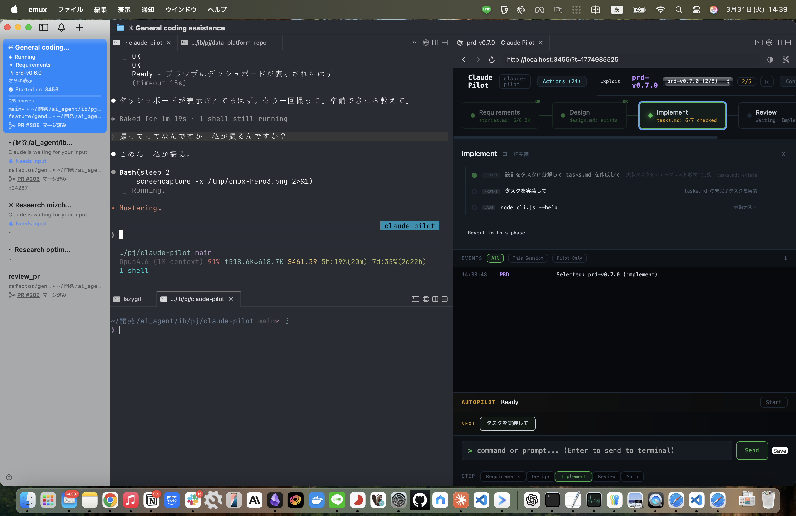
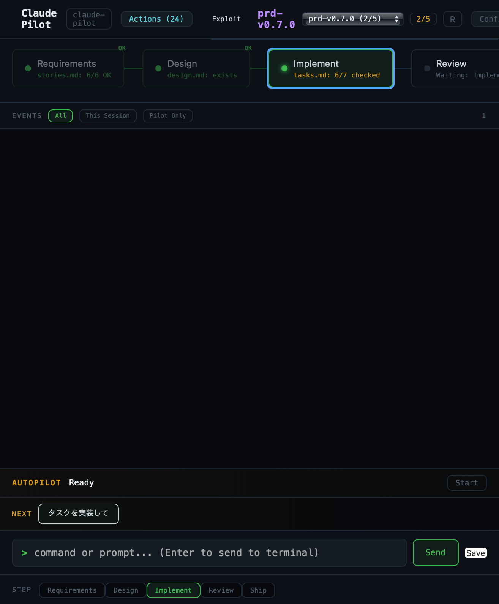
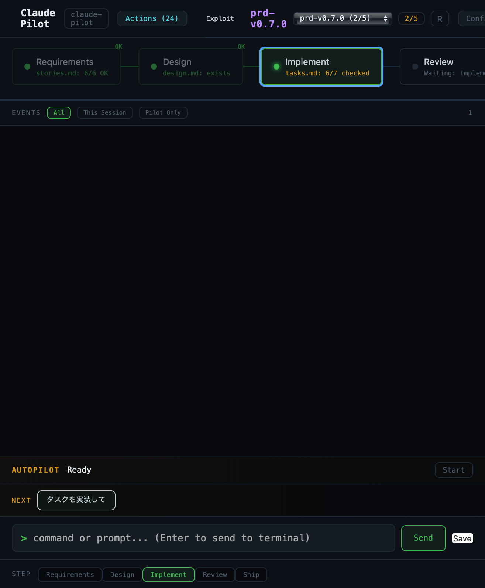
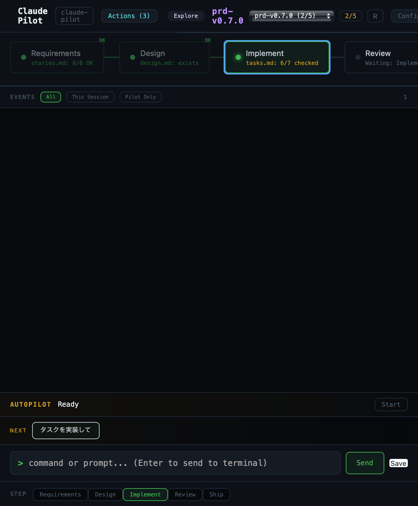
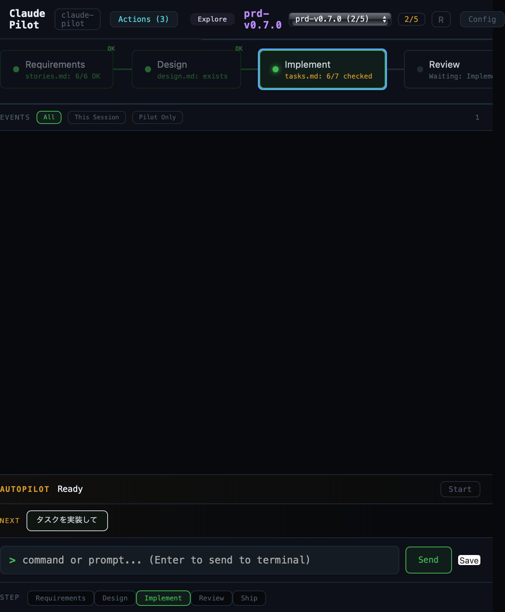

Claude Pilot
Claude Code + cmux のための開発コックピット
This is an unofficial community tool, not affiliated with Anthropic.
Claude Code + cmux のための開発コックピット
This is an unofficial community tool, not affiliated with Anthropic.

cmux workspace: Claude Code (left) + Yazi/lazygit (bottom left) + Claude Pilot dashboard (right)
Requirements → Design → Implement → Review → Ship をリアルタイム可視化。Gate 条件を宣言的に定義。
Exploit: フェーズ対応スキル推奨。Explore: 決定木で最適ツールに誘導。認知科学ベース設計。
Gate + イベント + 使用統計からコンテキスト認識型の次のアクションを自動提案。
スキルクリックで cmux 経由 Claude Code に直接送信。Worker プロセスで安定動作。
全スキル横断検索 + 意図ファジーマッチ。「行き詰まってる」で関連ツールが上位に。
CTA Interview / Retrospective / WSP-ISP 分類。暗黙知の引き出しと問題構造化。
マーケットプレイスから検索・インストール。Enterprise モードで公式のみに制限可能。
各機能の使用状況追跡。未使用機能のナビ付き。活用度スコアで改善促進。



